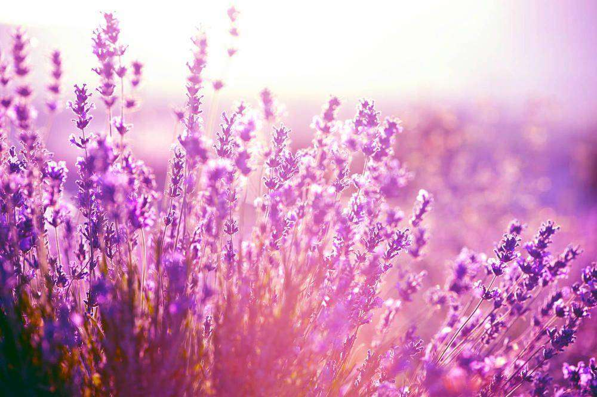

“The earth laughs in flowers.”Flowers are the music of the earth. |
||
|
The most common form in cultivation is the common or English lavender Lavandula angustifolia (formerly named L. officinalis). A wide range of cultivars can be found. Other commonly grown ornamental species are L. stoechas, L. dentata, and L. multifida (Egyptian lavender). Because the cultivated forms are planted in gardens worldwide, they are occasionally found growing wild as garden escapes, well beyond their natural range. Such spontaneous growth is usually harmless, but in some cases Lavandula species have become invasive. For example, in Australia, Lavandula stoechas has become a cause for concern; it occurs widely throughout the continent, and has been declared a noxious weed in Victoria since 1920. It is regarded as a weed in parts of Spain. |
||
|
Lavender (Scientific Name: Lavandula) is one of the most fragrant and highly versatile herbs that you can grow. As you may already know, lavender is used in essential oils, perfumes, in aromatherapy, in traditional herbal medicine and in the kitchen as a culinary herb.  |
Lavenders flourish best in dry, well-drained, sandy or gravelly soils in full sun. All types need little or no fertilizer and good air circulation. In areas of high humidity, root rot due to fungus infection can be a problem. Organic mulches can trap moisture around the plants' bases, encouraging root rot. Gravelly materials such as crushed rocks give better results. It grows best in soils with a pH between 6 and 8. Most lavender is hand-harvested, and harvest times vary depending on intended use. Lavender oil has been studied by preliminary research for its possible effect in alleviating anxiety and sleep disturbances, but no conclusions about the effects on anxiety were possible. |
|
Flowers are the music of the earth.“The earth laughs in flowers.” |
||